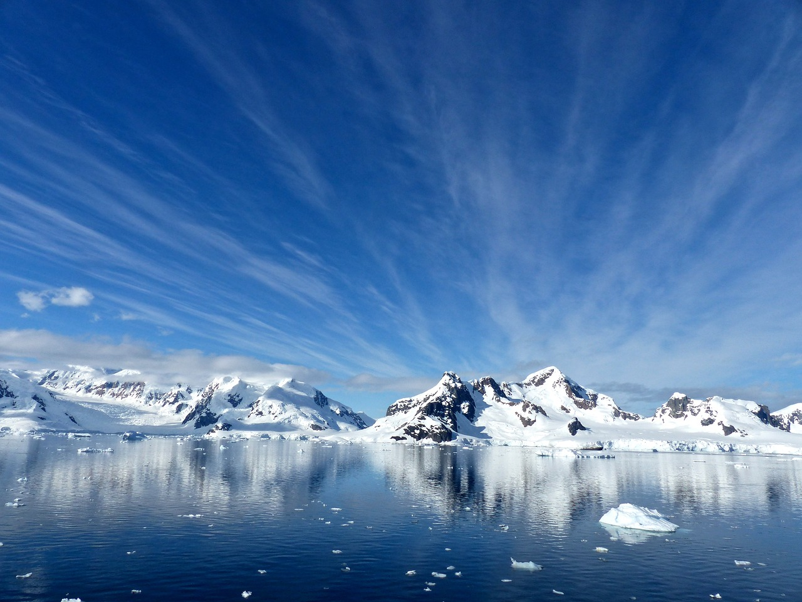
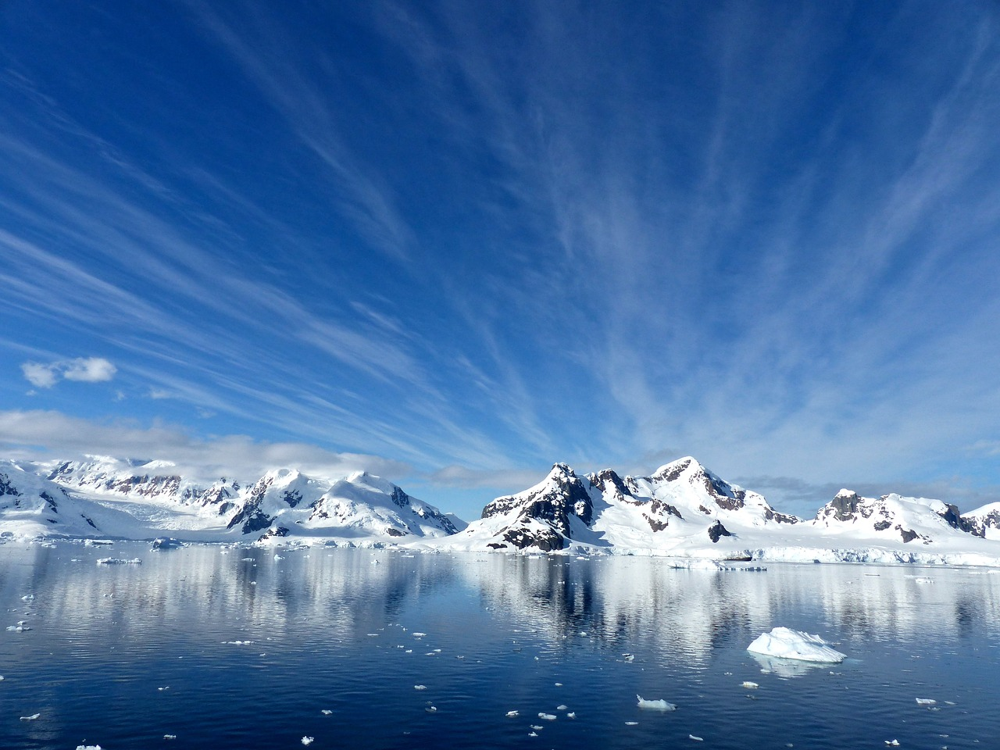

Die Antarktis umfasst die um den Südpol gelegenen Land- und Meeresgebiete, also im Groben den Kontinent Antarktis und den Südlichen Ozean. Als geographischastronomische Zone wird sie durch den südlichen Polarkreis begrenzt und reicht somit vom Südpol bis 66° 33' südlicher Breite.


 
